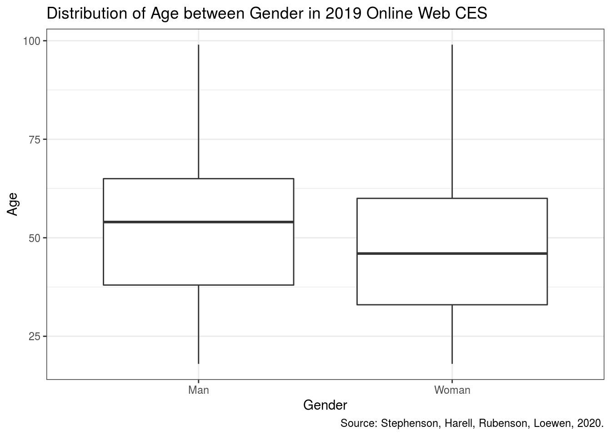

# install.packages("devtools")
# devtools::install_github("hodgettsp/cesR")
library(tidyverse) Abstract
The distribution of Canadian Age is very interesting: man is generally older than women. 2019 Canadian Election Study helps us to understand the distribution of age for both men and women.
Introduction
Canadian Election Study that surveyed in 2019 included much information about Canadians, one of the interesting directions could be how gender is related to Canadian’s age. As we have participants’ age and gender, we found that Man is generally older than women.
Some initial explorations on the data set will be created, including select useful variables and reasonable observations; then a series of the plot will be created in order to find the distribution of these variables. We found that the median and the maximum point of man’s age is older than women.
The paper will analyze the distribution of age for both men and women. In the future, we will be able to further analyze the age of death for men and women. But one of the weaknesses of the paper is that our sample size is small compare to the entire population.
cesR::get_ces("ces2019_web")
## TO CITE THIS SURVEY FILE:
##
## - Stephenson, Laura B; Harell, Allison; Rubenson, Daniel; Loewen, Peter John, 2020, '2019 Canadian Election Study - Online Survey', https://doi.org/10.7910/DVN/DUS88V, Harvard Dataverse, V1
##
## - Stephenson, Laura, Allison Harrel, Daniel Rubenson and Peter Loewen. Forthcoming. 'Measuring Preferences and Behaviour in the 2019 Canadian Election Study,' Canadian Journal of Political Science.
##
## LINK: https://dataverse.harvard.edu/dataset.xhtml?persistentId=doi:10.7910/DVN/DUS88VData
The variables we focus on are:
the gender of participants in the Web survey
the age of participants in the Web survey
The data is about Canadian Election Study in 2019 and I choose the Web survey in this study to explore some interesting findings. After filter people who provide their gender and age, there are 37531 observations available in the dataset.
Summary statistics for the two interested variables age and gender:
## `summarise()` ungrouping output (override with `.groups` argument)
## # A tibble: 2 x 3
## cps19_gender mean_age median_age
## <chr> <dbl> <dbl>
## 1 Man 51.8 54
## 2 Woman 46.6 46Plot

Based on two boxplots, we found that the distribution of age for both man and woman are symmetric distribution. The median age between man and woman are different, more specifically the median age of man is greater than women.
Discussion
Currently, the median age of men is greater than women in Canada for 8 years old. Although the average age between men and women has smaller gaps compares to the median, it still can imply that in society, men are generally older than women.
However, our dataset only contained people who were willing to participate. There is some non-response problem in the data set.
Weaknesses and next steps
So one of the weaknesses of the analysis is that we have fewer samples compare to the entire Canadian population.
Furthermore, we found the max-age for men is also older than women, the next step could be to analyze the average age of death for both gender.
Blog website
References
- Stephenson, Laura B; Harell, Allison; Rubenson, Daniel; Loewen, Peter John, 2020, ‘2019 Canadian Election Study - Online Survey’, https://doi.org/10.7910/DVN/DUS88V, Harvard Dataverse, V1
- Paul A. Hodgetts and Rohan Alexander (2020). cesR: Access the CES Datasets a Little Easier.. R package version 0.1.0.
- Hadley Wickham, Jim Hester and Winston Chang (2020). devtools: Tools to Make Developing R Packages Easier. https://devtools.r-lib.org/,https://github.com/r-lib/devtools.
- R Core Team (2020). R: A language and environment for statistical computing. R, Foundation for Statistical Computing, Vienna, Austria. URL, https://www.R-project.org/.
- JJ Allaire and Yihui Xie and Jonathan McPherson and Javier Luraschi and Kevin Ushey and Aron Atkins and Hadley Wickham and Joe Cheng and Winston Chang and Richard Iannone (2020). rmarkdown: Dynamic Documents for R. R package version 2.3. URL https://rmarkdown.rstudio.com.